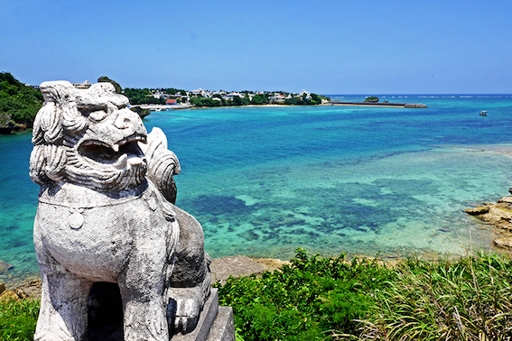

Okinawa
Welcome to Japan's Hawaii!
Okinawa is an island located at the southernmost tip of Japan. Its climate is warm year-round, the sea is beautiful, and you can enjoy stunning scenery, making it very similar to Hawaii. Even if you've been to Hawaii, you should go! Because Okinawa has a slightly different history from Japan and possesses many unique characteristics. The buildings are distinctive, and the food is also incredibly delicious.
